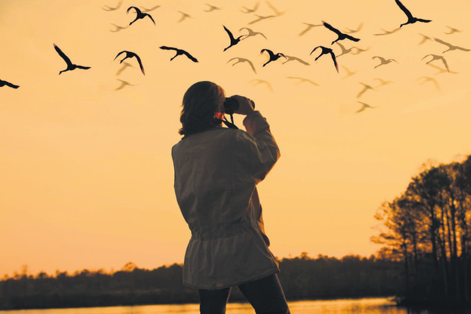
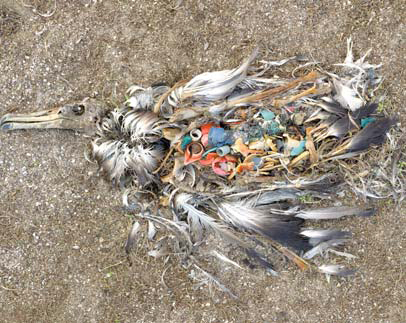

조류 생태계를 기후변화 및 이로부터 파생된 부차적인 피해로부터 보호하기 위해서는 조류의 개체수와 서식지 보존 현황을 모니터링하는 것이 필요하다. 일반인도 쉽게 참여할 수 있는 대표적인 시민 참여형 조류 모니터링 사이트로는 '네이처링(naturing.net)', '이버드(ebird.org)' 등이 있다.
이러한 사이트에 가입하여 자연관찰 내용을 업로드하고 사람들과 공유하면 조류의 개체수 분포, 서식지 상 위험 요인의 유무, 기후 변화 양상 등 다양한 정보가 사이트에 축적되며,
이 정보를 분석함으로써 기후변화에 효과적으로 대처할 수 있다.
조류 생태계 보호를 위해서 환경과 연관된 여러 이슈들에 관심을 계속해서 갖는 것이 중요하다. 우리가 모르는 사이에 갯벌이 매립되어 넓적부리도요, 검은머리갈매기 등 새들이 서식지를 잃어가고, 저어새, 검은머리물떼새의 산란 장소가 사라지는 등의 극심한 환경 관련 문제들은
늘 일어나고 있다. 우리가 이러한 이슈들에 항상 적극적으로 참여하기는 어렵지만, 이런 일이 있다는 것을 인지하고 관심을 갖는 것만으로 환경보호에 도움이 될 수 있다. 우리는 사회를 구성하는 개인들이기 때문에 개개인의 생각이 친환경적인 방향으로 변화한다면, 사회 또한
그러리라고 기대할 수 있기 때문이다. 환경 이슈를 접하는 데에 있어 추천할 만한 유튜브 채널은 바로 '새덕후 Korean Birder'이다. 새덕후는 어릴 때부터 새를 관찰해온 베테랑 탐조가로, 환경운동가로서의 역할도 겸하고 있는 유튜버이다. 꼭 새덕후 채널이 아니더라도 뉴스 기사나 각종 도서 등 여러 매체를 통해
환경 관련 이슈에서 뒤처지지 않으려는 노력이 기후위기 대응에 있어 반드시 필요하다.
3. 생활 속 탐조 활동 하기

생활 속에서 탐조 활동을 하는 행위는 기후위기에 대응하는 일에 긍정적인 영향을 줄 수 있다. '탐조'란 쌍안경이나 맨눈을 이용해서 야생 조류의 모습을 관찰하는 활동을 말한다. 그저 새들을 관찰하는 것뿐인데 기후위기에 어떤 도움이 되냐고 생각할 수 있지만, 탐조활동을 하다보면 자연의 소중함과 아름다움을 깨달을 수 있기 때문에
우리의 마음가짐에 있어 변화를 가져올 수도 있고, 해마다 철새들이 찾아오는 시기가 앞당겨지는 것을 체감해보면서 지구온난화에 대해 경각심을 가질 수 있다. 또한 일상생활 중에 탐조활동을 하면서 자연스럽게 우리 주변 환경의 보존 현황에 대해서 조사하고 파악할 수 있어 모니터링까지 겸할 수 있게 된다.
4. 일회용품 사용 줄이기

지구를 지키기 위해 일회용품의 사용을 줄이고 재활용이 가능한 제품을 사용하라는 말은 귀에 딱지가 앉도록 들었을 정도로 고전적이면서도 따분한 표현이라고 생각할 수 있다. 하지만 자주 듣는 표현인만큼 매우 중요하다. 왼쪽에 있는 사진을 본 적이 있을 것이다. 알바트로스 새끼가 플라스틱을 먹고 죽어 있는 모습이다.
우리가 잠깐 편하자고 쓴 일회용품들은 동물들의 평생을 위협하는 치명적인 무기가 될 수 있다. 또한 일회용품을 소각할 때 나오는 독성가스는 생물들에게 유해한 영향을 미치고, 쓰레기의 연소로 발생한 이산화탄소는 지구온난화를 가속시켜 기후위기를 더욱 악화시킨다. 우리가 10분 편하려고 쓴 일회용품이 동물들의 10년을 앗아갈 수 있다는 점을 기억하자.